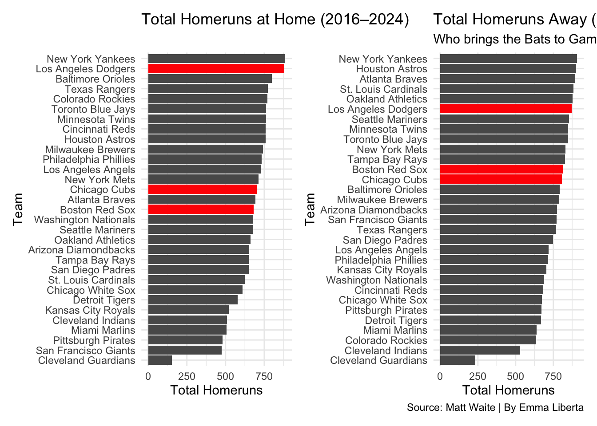
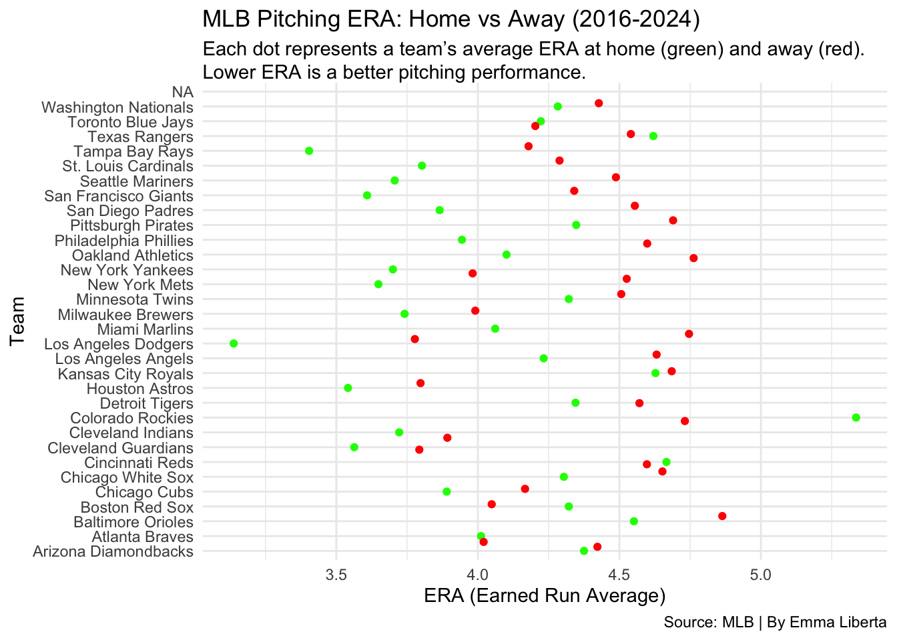

There’s no place like home. Most might associate that with Dorothy and the Land of Oz but it’s just as true in the game of baseball. Not every field is shaped the same, altitude, weather, and humidity all greatly effect how the game of baseball is played. Field factors aside, traveling is just awful, Long distance on a bus or an airplane aren’t fun for an average human, much less 6’7” Aaron Judge. Analysts and commentators talk about home field advantage all the time, especially around playoff season But is it real? Does staying off the road help teams win more? With so many factors at play, it’s no surprise that teams seem to have an edge when they’re at home. Regardless of the reason, there’s something about being in your own park that can make a difference.
You don’t have to look far into the stat sheets to see the patern. Home win percentages are higher across the board, but a few teams really stand out. It makes sense, familiar routines, fan support, and no cross-country flights go a long way. Some teams, like the L.A. Dodgers, take full advantage, dominating at home like it’s a cheat code. The Astros and Braves are not far behind, but their home and away records are almost identical, proof they’re built to win anywhere. Then there’s the Colorado Rockies. They show a massive difference in wins and losses, but not because they’re dominant at home, it’s just that their road record is that bad. Overall, the trend holds true: home really is where the wins are.
Code
library(tidyverse)library(ggalt)library(ggtext)library(patchwork)away16 <-read_csv("2016away.csv")away17 <-read_csv("2017away.csv")away18 <-read_csv("2018away.csv")away19 <-read_csv("2019away.csv")away21 <-read_csv("2021away.csv")away22 <-read_csv("2022away.csv")away23 <-read_csv("2023away.csv")away24 <-read_csv("2024away.csv")home16 <-read_csv("2016home.csv")home17 <-read_csv("2017home.csv")home18 <-read_csv("2018home.csv")home19 <-read_csv("2019home.csv")home21 <-read_csv("2021home.csv")home22 <-read_csv("2022home.csv")home23 <-read_csv("2023home.csv")home24 <-read_csv("2024home.csv")home <-bind_rows(home16, home17, home18, home19, home21, home22, home23, home24) |>filter(is.na(TEAM) ==FALSE)away <-bind_rows(away16, away17, away18, away19, away21, away22, away23, away24) |>filter(is.na(TEAM) ==FALSE)home_totals <- home |>group_by(TEAM) |>summarise(HomeHR =sum(HR))away_totals <- away |>group_by(TEAM) |>summarise(AwayHR =sum(HR))color <- home_totals|>filter( TEAM =="Chicago Cubs"| TEAM =="Boston Red Sox"| TEAM =="Los Angeles Dodgers" )color2 <- away_totals|>filter( TEAM =="Chicago Cubs"| TEAM =="Boston Red Sox"| TEAM =="Los Angeles Dodgers" )chart1 <-ggplot() +geom_bar(data=home_totals, aes(x=reorder(TEAM, HomeHR), weight=HomeHR), fill="grey") +coord_flip() +labs(title ="Total Homeruns at Home (2016–2024)",x ="Team",y ="Total Homeruns" ) +theme_minimal() +theme(legend.position ="none") +geom_bar(data=home_totals, aes(x=reorder(TEAM, HomeHR), weight=HomeHR)) +geom_bar(data=color, aes(x=reorder(TEAM, HomeHR), weight=HomeHR), fill="red") +coord_flip()chart2 <-ggplot() +geom_bar(data=away_totals, aes(x=reorder(TEAM, AwayHR), weight=AwayHR), fill="grey") +coord_flip() +labs(title ="Total Homeruns Away (2016–2024)",subtitle ="Who brings the Bats to Games?",caption="Source: Matt Waite | By Emma Liberta",x ="Team",y ="Total Homeruns" ) +theme_minimal() +theme(legend.position ="none") +geom_bar(data=away_totals, aes(x=reorder(TEAM, AwayHR), weight=AwayHR)) +geom_bar(data=color2, aes(x=reorder(TEAM, AwayHR), weight=AwayHR), fill="red") +coord_flip()chart1 + chart2

Now, when people think of iconic ballparks, Fenway Park and Wrigley Field are always top of mind. They’ve been around forever, almost as long as Albert Pujols. They’re historic and famous, for sure, but when it comes to giving teams a true advantage? Eh… These parks might be legends, but they’re more “middle of the pack” than baseball royalty. Fenway has the Green Monster and Wrigley has Wrigleyville, which mostly just feeds Chicago’s alcoholism. Those quirks don’t necessarily mean more home runs or better baseball. At some point, ‘historic charm’ is just code for ‘nothing’s been renovated since Babe Ruth was a rookie.’ Meanwhile, over on the West Coast, Dodger Stadium, despite being the biggest in the league, ranks toward the top when it comes to home runs. One would think that all that outfield space would keep the ball in play.
Code
library(tidyverse)library(ggalt)library(ggtext)library(patchwork)library(ggbeeswarm)library(ggrepel)home16 <-read_csv("2016homep.csv")home17 <-read_csv("2017homep.csv")home18 <-read_csv("2018homep.csv")home19 <-read_csv("2019homep.csv")home21 <-read_csv("2021homep.csv")home22 <-read_csv("2022homep.csv")home23 <-read_csv("2023homep.csv")home24 <-read_csv("2024homep.csv")away16 <-read_csv("2016awayp.csv")away17 <-read_csv("2017awayp.csv")away18 <-read_csv("2018awayp.csv")away19 <-read_csv("2019awayp.csv")away21 <-read_csv("2021awayp.csv")away22 <-read_csv("2022awayp.csv")away23 <-read_csv("2023awayp.csv")away24 <-read_csv("2024awayp.csv")home <-bind_rows(home16, home17, home18, home19, home21, home22, home23, home24)away <-bind_rows(away16, away17, away18, away19, away21, away22, away23, away24)homepitching <- home |>group_by(TEAM) |>summarise(home_era =mean(ERA))awaypitching <- away |>group_by(TEAM) |>summarise(away_era =mean(ERA))ggplot() +geom_beeswarm(data = homepitching,aes(x=home_era, y=TEAM), color="green") +geom_jitter(data = awaypitching,aes(x=away_era, y=TEAM), color="red") +labs(title="MLB Pitching ERA: Home vs Away (2016-2024)", subtitle ="Each dot represents a team's average ERA at home (green) and away (red). Lower ERA is a better pitching performance.",caption ="Source: MLB | By Emma Liberta",x ="ERA (Earned Run Average)",y ="Team" ) +theme_minimal() +theme(plot.subtitle =element_textbox_simple() )

When it comes to ERA, most teams follow the trend, they perform better at home. Familiar surroundings, supportive crowds, families and a little extra energy from sleeping in their own beds can make a difference. But then there are the Boston Red Sox, Cincinnati Reds, Colorado Rockies (shocker), Texas Rangers and Toronto Blue Jays, who all have a lower ERA on the road. The Rockies, especially, hard to pitch when every fastball feels like it’s flying into the bleachers. While most teams thrive in their own ballparks, these few seem to save their best stuff for the road, leaving everyone wondering if their home-field advantage got lost at baggage claim.
All the quirks, comforts, and chaos of each ballpark paint a clear picture that home field advantage in the MLB is real. Whether it’s better sleep, crowd energy, or just knowing how the ball bounces off the wall in left field, being home matters. The stats back it up, teams pitch better, hit more confidently and win more in their own backyard. In baseball, as in life, there really is no place like home.